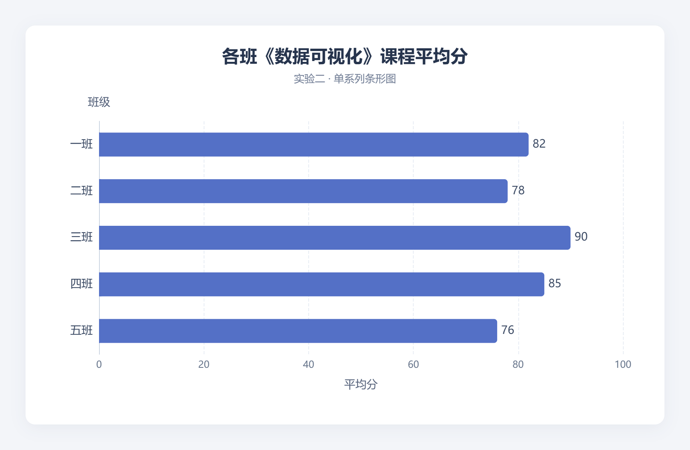

LAB NOTES / 课程实验
从图表配置到算法验证，集中收录实验目的、数据、实现与运行结果。
共 11 份
实验一 · 第 8 题
从商品销售数据出发，配置第一个可运行的饼图。
实验二 · 第 9 题
比较内部标签、外部文字对齐和引导线末端对齐。
实验三 · 第 10 题
用两个并列饼图比较江苏五座城市的服装销售构成。
实验四 · 第 11 题
划分左右绘制区域，呈现电脑和配件的季度销售构成。
实验五 · 第 12 题
用环形图呈现 App 六个功能模块的月使用次数。
实验六 · 第 13 题
将一级品类与二级子类放在同心的两个系列中。
算法基础
证明混合算法的复杂度，并通过真实计时选择子数组阈值。
推荐系统
比较三种相似度，选择邻居数量并评估电影推荐效果。
性能比较
比较冒泡、插入、归并和快速排序随数据规模变化的耗时。

条形图练习
将五个班级的平均分绘制为横向条形图。
折线与散点
单系列折线、堆叠面积与分组散点的综合练习。
没有匹配的报告，请换一个关键词或选择其他分类。